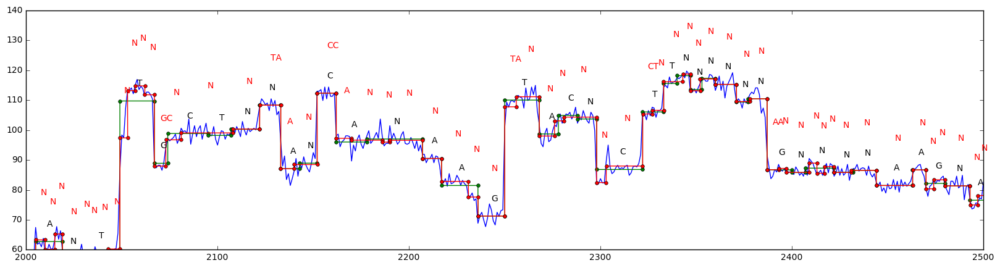

Analyse of current signal from nanopore experiments to study replication
 Current signal from Nanopore experiment and the comparison of the analysis by recurrent neural network(black) and tool from nanopore (Red). N means that no base was assigned to this part of the currentNanopore experiments consist in analysing the current produced by a single DNA strand that slide through a nanopore protein. The current registered is dependent on the five nucleotides that are presents at any time in the Nanopore.
In collaboration with Magali Hennion in the team of Olivier Hyrien at the IBENS we analyse experiments where the Thymidine as been substituted by BrdU analogue, and analyse the small variation in the current to detect the track substituted in BrdU. By analysisng DNA of yeast which have been grown in BrdU, we can follow the replication process